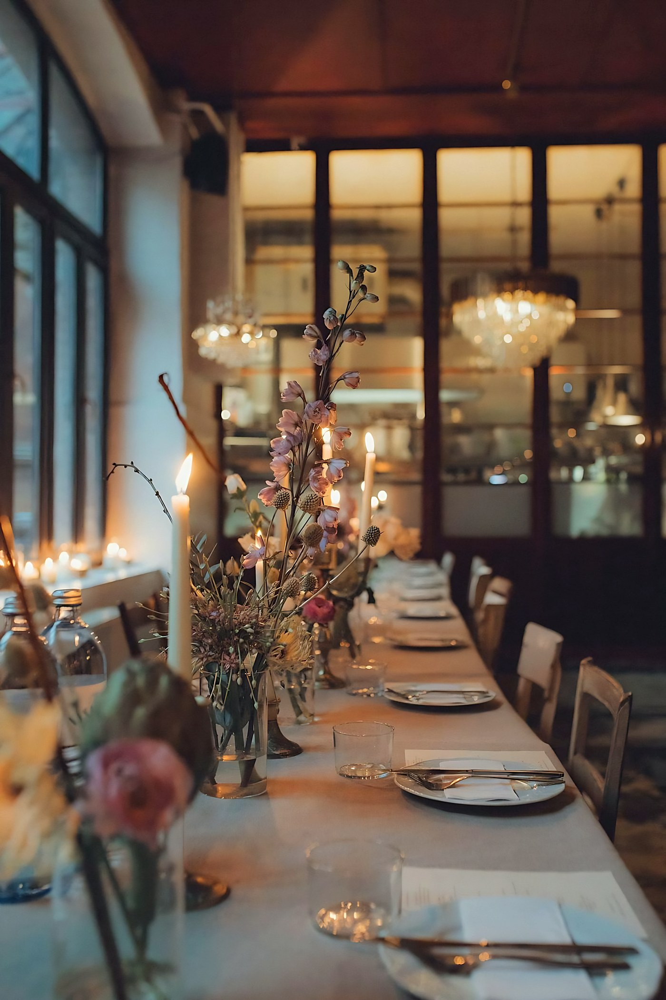
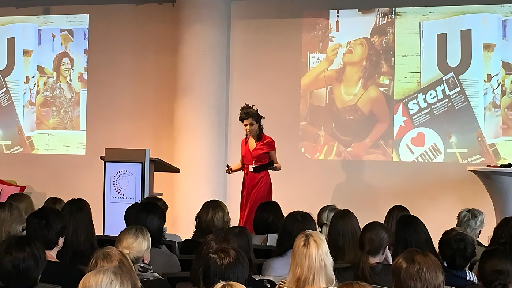
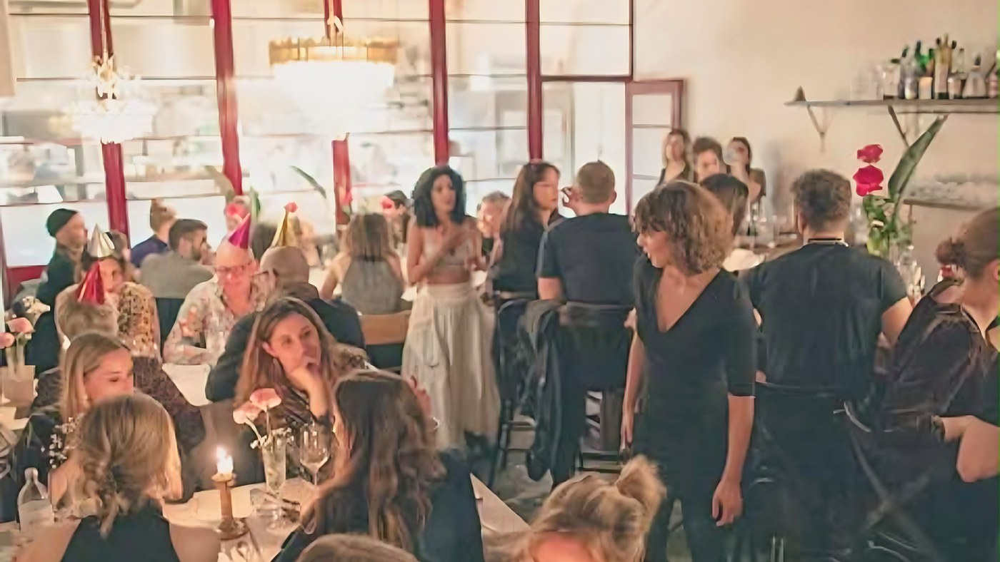
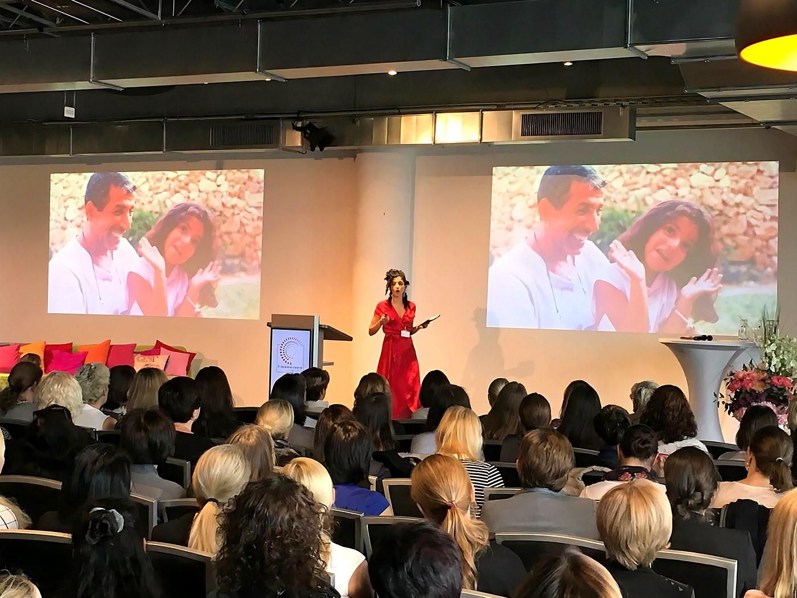
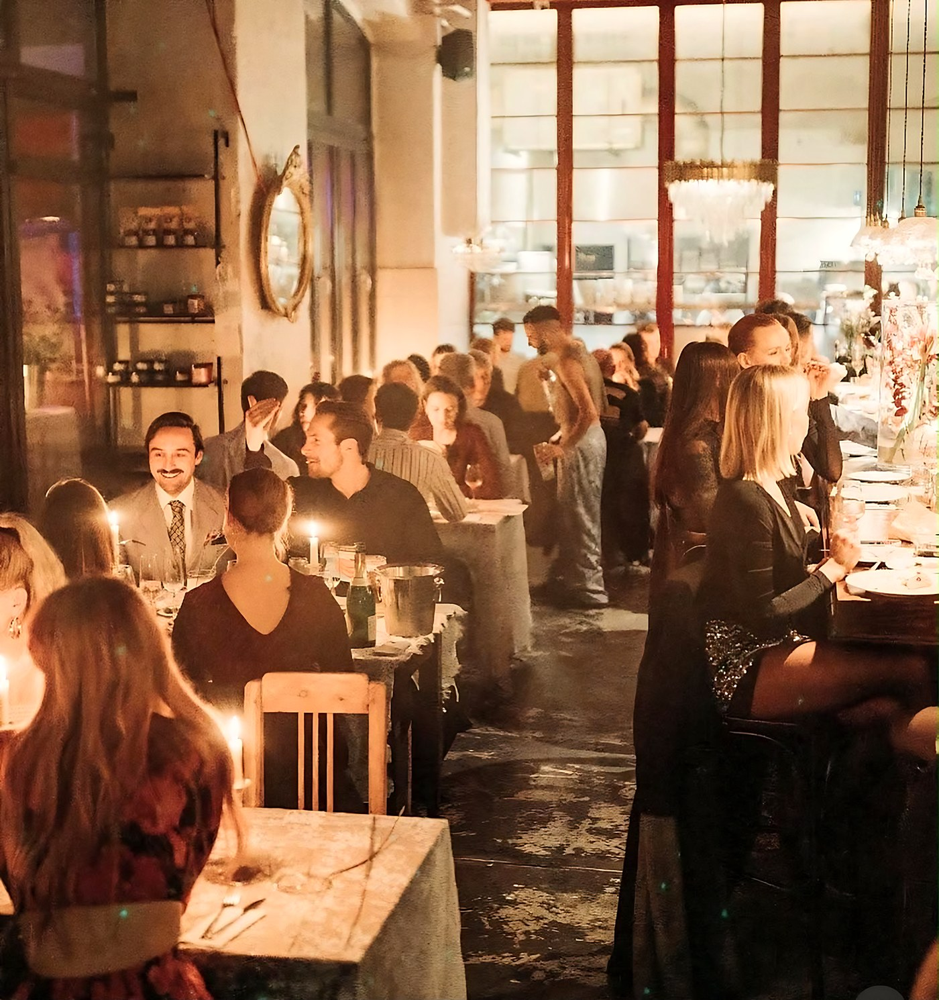

Concept development & restaurant launch
From the idea to opening day.
ForFounders and owners before opening
- Business plan and planning
- Branding and concept
- Building operating standards



Shani Ahiel · Hospitality entrepreneur and operator, Berlin
I help restaurant owners and founders open, stabilise and grow hospitality businesses, drawing on more than a decade of building and running restaurants, brands and events.
Built and ran in BerlinYafo · Shishi · Amano · Selina Berlin
I started on the floor and behind the bar in Tel Aviv and moved up into event management. Since then I have opened and run restaurants in Berlin and led partnerships with hotel groups.

I started Yafo in a space with no kitchen and no bar, and built everything from scratch. I mopped the floor after closing, dealt with suppliers, fixed what needed fixing myself, and hired one person after another.
That grew into a 200-seat restaurant, a chef’s restaurant, hotel partnerships and a team of almost 60. I bring that experience, as an owner and operator, to every business I work with.
“If you don’t love people, you don’t work in hospitality.”
Shani Ahiel, interviewed by nomyblog
I started on the floor and behind the bar in Tel Aviv, and moved up into event management.

A space with no kitchen and no bar becomes a restaurant and bar with weekly events, and an address for Israeli hospitality in Berlin.

A chef’s restaurant in a large brick courtyard in Kreuzberg, with a menu built on produce from Brandenburg farmers.
Yafo is hosted at the Amano hotel, and the lobby becomes a real restaurant.
Leading the hotel’s entire food & beverage operation, against KPI targets and in a partnership model.
Working with restaurant owners, founders and hotels: openings, turnarounds, ongoing support and outsourcing, and talks on stage.
Hundreds of guests a night, weekly events, weddings and courtyard parties.
Four ways to work together, depending on where the business is. Choose one or combine them.

From the idea to opening day.
ForFounders and owners before opening
When the numbers don’t add up, we take back control.
ForA full room that isn’t profitable, or a business that lost its way

For a business that works and wants to grow and stay current.
ForWorking restaurants ready to grow
Producing and leading private and corporate events, and building an events department inside an existing business.
ForRestaurants, hotels and companies
“If you don’t love people, you don’t work in hospitality.”
Shani Ahiel, interviewed by nomyblog
A restaurant, bar and events run like an independent business inside the hotel: ownership of operations, measurable KPI targets and a partnership model, as I led at Selina Berlin.

Everything I offer, I did myself, in Berlin, as an owner and operator. Tap a venue to see the photos.
Tell me in a few sentences where the business is, and I will get back to you.
Leave your details
We’ll get back to you within 24 hours.